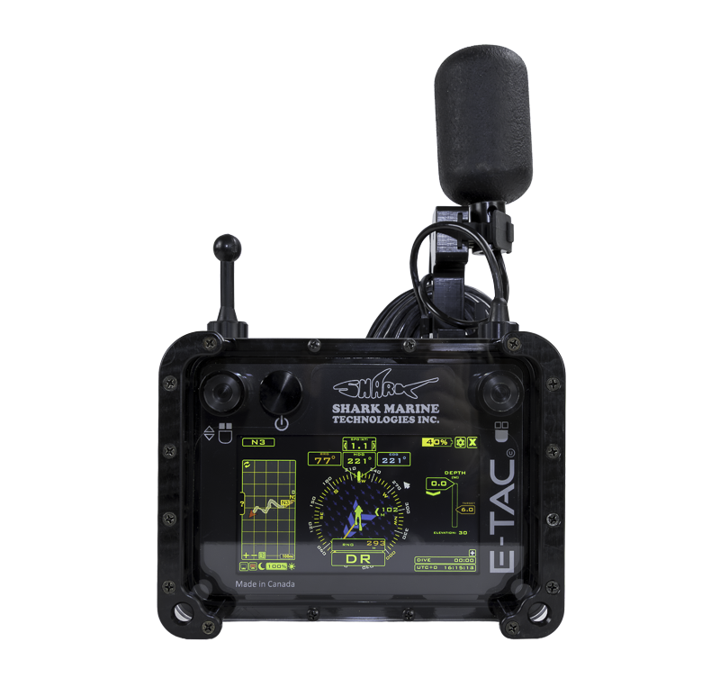

01 / Portable diver navigation system
E-TAC
A portable navigation system designed for combat divers and extended missions, combining position and orientation sensors with a still and video camera.
- Maximum operating depth
- 50 m
- Battery
- Rechargeable lithium; up to 10 hours
- Dimensions
- 19 × 14 × 8 cm
- Weight in air
- 1.2 kg
Key features
- Three-axis gyroscope, accelerometer and magnetometer
- Depth sensor and GPS receiver
- Still and video camera